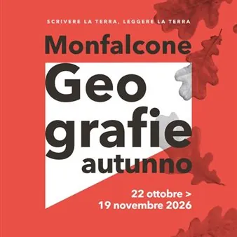

da gio 22 ott a gio 19 nov · dalle 18:00
Monfalcone Geografie - Autunno 2026
Torna anche quest'anno l'amatissima rassegna letteraria "Monfalcone Geografie", nella sua versione autunnale! L'edizione Autunno 2026 accompagna il pubblico in un percorso tra storie e luoghi, dal Friuli di fine Ottocento alla Sarajevo assediata, passando per la memoria della…
 Indicazioni
Indicazioni
- Costi e prenotazioni
- Costo non indicato · Prenotazione non indicata
- Programma
- Programma da verificare. Apri la fonte ufficiale per orari e possibili aggiornamenti.
- In caso di maltempo
- Nessuna indicazione specifica pubblicata.
- Note
- Acquisito automaticamente dalla fonte.
L’EVENTO
Descrizione completa
Torna anche quest'anno l'amatissima rassegna letteraria "Monfalcone Geografie", nella sua versione autunnale!
L'edizione Autunno 2026 accompagna il pubblico in un percorso tra storie e luoghi, dal Friuli di fine Ottocento alla Sarajevo assediata, passando per la memoria della Grande Guerra e il noir ambientato a Trieste e Grado. Gli incontri si svolgono il giovedì pomeriggio, alle ore 18.00, in vari luoghi cittadini.
Si comincia giovedì 22 ottobre 2026 in Sala Conferenze della Biblioteca comunale di Monfalcone con la presentazione del libro "Il tempo delle viole" (Newton Compton, 2026) di Elena Commessatti. A moderare l'incontro con l'autrice, Fabiana Dallavalle. Ambientato in Friuli nel 1888, il volume segue Aurora, Bianca e Viola: tre giovani donne che, unite dal desiderio di conoscenza ed emancipazione, fondano Le Viole di Udine, una società segreta che mira a sostenere e proteggere le donne. Un romanzo corale e poetico sulla forza della sorellanza e sul coraggio di cambiare il mondo.
Elena Commessatti, autrice e giornalista, collabora con le pagine culturali del Messaggero Veneto e del gruppo NEM. Realizza e presenta, inoltre, diversi programmi radiofonici per la sede Rai del Friuli Venezia Giulia e si occupa dal 2008 del cold case del "Mostro di Udine", caso di cronaca nera tuttora irrisolto.
Giovedì 29 ottobre, presso la Casa delle Geografie (Palazzo ex Pretura), Mirella Della Valle e Lucio Fabi, in dialogo con Guido Alliney, presentano il volume "Lacrime vive. I graffiti della Villa Hohenlohe di C astelnuovo" (Edizioni della Laguna, 2025): un'emozionante opera che restituisce voce ai graffiti lasciati dai soldati sulle pareti di Villa Hohenlohe, trasformata in ospedale da campo durante la Prima Guerra Mondiale. Sulla pietra sono impressi nomi, date, preghiere, che non verranno mai dimenticati e che ci restituiscono tutta la crudeltà e brutalità della guerra.
L'autrice Mirella Della Valle si occupa di valorizzazione del territorio regionale e gestisce la tenuta di Castelvecchio. Lucio Fabi è, invece, storico e consulente museale, specializzato nella storia sociale e, in particolare, nella Prima Guerra Mondiale. Autore di numerosi volumi e saggi, ha curato mostre, allestimenti museali e progetti di valorizzaione dei luoghi della Grande Guerra.
Al termine della presentazione, è prevista la proiezione del cortometraggio dal titolo "Eco del Carso", diretto da Emanuele Flangini. Il volume restituisce voce ai graffiti lasciati dai soldati sulle pareti della villa, trasformata in ospedale da campo durante la Prima guerra mondiale. Della Valle si occupa di valorizzazione del territorio regionale e gestisce la tenuta di Castelvecchio; Fabi è storico e consulente museale, specializzato nella storia sociale e nella Grande Guerra. Il terzo appuntamento è in programma giovedì 5 novembre 2026 in Sala Conferenze della Biblioteca comunale e vede lo scrittore Marco Giovanetti, introdotto da Elisa Michellut, presentare il suo ultimo lavoro "La stanza di Sarah" (Espressioni di Marca Aperta, 2026). Nel romanzo l’ispettore Ruggero Astolfi indaga sulla morte di una ragazza riservata, che si scoprirà piena di segreti. In questo complcato scenario, la verità è un vero e proprio labirinto, in cui si muovono giornalisti d'assalto, potenti avvocati e cinici scoop televisiv, tra le luci dei locali di tendenza e i silenzi di una Trieste assolata e senza vento. Scrittore, commediografo e saggista gradese, Giovanetti ha ideato il festival letterario Grado Giallo ed è autore di romanzi, saggi e opere teatrali. Giovedì 12 novembre torna il giallo con Andrea Nagele e "Grado e i brividi del passato" (Gaspari, 2026), presentato da Emily Menguzzato. Tutto iha inizio quando l'affascinante medico Gianluca Pirandelli apre un ambulatorio ginecologico a Grado: di lì a poco alcune sue pazienti, dopo essere state in cura da lui, muoiono improvvisamente. Colpita profondamente dalla morte di una sua amica, la commissaria Maddalena Degrassi, profondamente colpita dalla morte di un'amica, decide di far luce sulla vicenda. Le sue indagini porteranno a scoprire una realtà inquietante, fatta di spaventosi segreti e inquietanti verità. Nagele, scrittrice austriaca e psicoterapeuta, vive tra Klagenfurt, Grado e Berlino; è autrice di otto romanzi gialli ambientati nella località lagunare e con protagonista Degrassi. La rassegna si conclude giovedì 19 novembre con l'autore Gianni Galleri, che, in dialogo con Katia Bonaventura, presenta il libro "La finale di Sarajevo" (Bottega Errante, 2026). La storia inedita del primo campionato di basket bosniaco raccontata dalla prospettiva di un giocatore, Drago Zec. Una situazione dramamtica, che vede da una parte chi cerca di scappare da una Sarajevo assediata, dall'altra un gruppo di uomini che lasciano le loro città, le loro case, le loro famiglie per disputare la finale del primo campionato bosniaco di pallacanestro in uno dei luoghi più pericolosi al mondo. Galleri viaggia, ascolta le persone, le intervista, ci beve assieme: ne esce un reportage narrativo che mostra come lo sport, spesso, possa mescolarsi a politica, storia, società, guerra e diventare un punto di vista privilegiato da cui guardare il mondo.
La partecipazione a tutti gli incontri è gratuita.
Non è necessaria la prenotazione.
Per maggiori informazioni:
tel. +39 0481 494373
e-mail: geografie@comune.monfalcone.go.it
IL PROGRAMMA
Programma e orari
Appuntamenti raccolti dalle fonti elencate. Dove manca un orario, non è ancora disponibile in questa scheda.
Programma pubblicato
- Dal 2026-10-22 al 2026-11-19
INFORMAZIONI UTILI
Prima di partire
- Controllare la fonte prima di partire.
ORGANIZZAZIONE